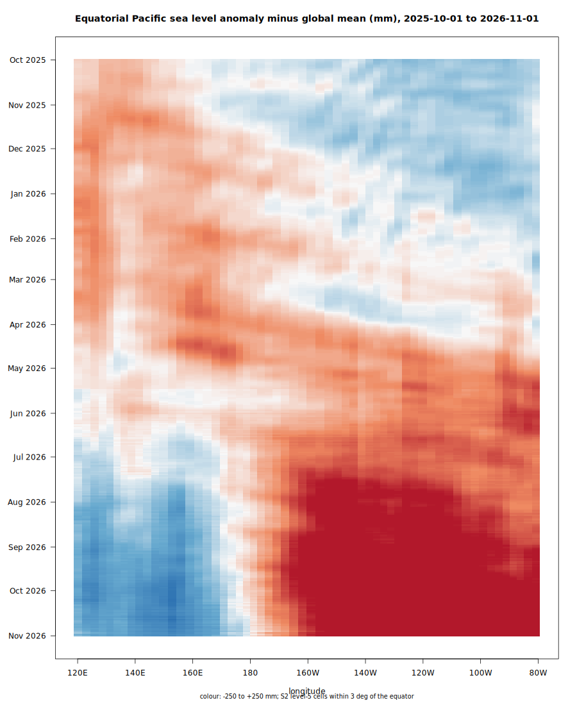

Daily satellite records of the ocean, reduced once to exact, mergeable statistics on a global grid and kept current. Any region, any period, any combination: computed from the sums in seconds, without re-reading the archives.
NOAA OISST v2.1 (daily, from 1981) and GHRSST MUR (daily, 1 km, from 2002)
Copernicus Marine DUACS L4 (daily, 0.125°, from 1993), delayed-time then near-real-time
ESA Ocean Colour CCI v6.0 (5-day, 4 km, from 1997), in log10
NSIDC sea ice concentration CDR (daily, 25 km, Southern Ocean): seasonality per pixel, and concentration sums on S2 cells
Every pixel of every daily field is assigned whole to the S2 level-5 cell containing its centre (about 290 km across); nothing is warped or resampled. Each cell keeps four numbers per date: the pixel count, the summed area weight, and the weighted sum and sum of squares of the value. Sums add: the mean and variance of any union of cells and dates come from adding rows and taking one ratio, so a region is a selection of cells, not a new computation, and the statistics are exact. The design follows NASA ocean colour's binning scheme (weighted sums and sums of squares per equal-area bin, since 1997).
The engine is grist, an R package: catalogs of source files in, per-date cell sums out. Each record is a small repository that holds only its product knowledge (catalog, schedule, checks, site). Backfills and daily updates run on Pawsey's Setonix, and the sums are published to Pawsey object storage.
| check | result |
|---|---|
| cell sums against direct computation on the same source file | exact to every printed digit (chlorophyll, 2010-05-01) |
| engine against the original trend.sst implementation | bit-identical sums (OISST, GHRSST) |
| global mean sea level rate, 1993–2026 | 3.16 mm/yr; published altimetry about 3.1–3.3 |
| leading mode against NOAA’s Oceanic Niño Index | r = 0.96 (SST), 0.94 (sea level), peaking at zero lag |
| orientation and content of one date per record, mapped | El Niño tongue (1997), bloom and gyres (2010) |

Each record publishes its sums (one Parquet file per date: cell, date, n, sumw, sumwx, sumwx2), its catalog and a manifest, readable anonymously over https:
Sea ice seasonality is published as per-ice-year GeoTIFFs under aad-derived/trend-ice/; see the trend.ice data page.
Each site’s Explorer writes runnable R, Python and SQL for any selection of cells against these files.
This work uses resources of the Pawsey Supercomputing Research Centre, with funding from the Australian Government and the Government of Western Australia. Data: NOAA OISST v2.1; GHRSST Level 4 MUR (NASA JPL); NSIDC Sea Ice Concentration CDR; E.U. Copernicus Marine Service Information; ESA Ocean Colour Climate Change Initiative, version 6.0.